|
Among the most marvelous, most frightening and certainly most unbelievable possibilities suggested by psychic folklore is that human beings may be able to exert an observable influence upon the physical world -- simply through the power of conscious intention; or unconscious intention, or; by some accounts, through the assistance of spiritual intelligences; or as a result of a mysterious principle known as synchronicity. Some scholars -- such as Stephen Braude, professor of philosophy at the University of Maryland -- take such reports very seriously, claiming that no honest person can examine the case study reports and easily dismiss them. 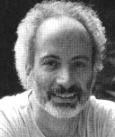 Professor Stephen Braude I have spent more than five years carefully studying the non-experimental evidence of parapsychology -- in fact, just that portion of it which is most contemptuously and adamantly dismissed by those academics....I started with the expectation that the received wisdom would be supported, and that my belief in the relative worthlessness of the material would merely be better-informed. But the evidence bowled me over. The more I learned about it, the weaker the traditional skeptical counter-hypotheses seemed, and the more clearly I realized to which extent skepticism may be fueled by ignorance. I was forced to confront the fact that I could find no decent reasons for doubting a great deal of strange testimony. It became clear to me that the primary source of my reluctance to embrace the evidence was my discomfort with it. I knew that I had to accept the evidence, or else admit that my avowed philosophical commitment to the truth was a sham.Skeptics (as well as most psi researchers) adamantly insist that it is absurd to give any credence to such reports until they meet the highest scientific standards. (Ironically, why would anyone bother to expend the large amounts of time and money required for meticulous scientific testing of such claims unless they were to give some credence to the non-scientific accounts?) An interesting insight into the psychological dynamics of such events is provided by the great Swiss psychiatrist Carl G. Jung -- who developed the concept of synchronicity as an acausal explanatory principle. In 1909, Jung visited his mentor Sigmund Freud in Vienna, and at one point asked him his opinion of psychic phenomena. Although Freud later changed his mind on the subject, at that time he dismissed the likelihood that such events could occur. Jung narrates an uncanny incident that occurred in the course of this conversation. While Freud was going on in this way, I had a curious sensation. It was as if my diaphragm was made of iron and becoming red-hot -- a glowing vault. And at that moment there was such a loud report in the bookcase, which stood right next to us, that we both started up in alarm, fearing the thing was going to topple over us. I said to Freud: "There, that is an example of a so-called catalytic exteriorisation phenomenon."The theme of mistrust characterizes the entire history of macro-psychokinetic claims. It is probably fair to state that no one, since Jesus Christ, has ever made such claims and been trusted (and there are many who distrust the supposed miracles of Christ). Furthermore, although mistrust may well blind us against considering vital possibilities, it is clearly warrantged by the simple fact that numerous cases of fraud have been exposed in this area. Perhaps, at a deeper level, both the fraud and the mistrust which it justifiably produces are part of an underlying protective mechanism developed within the collective unconscious (to use a Jungian term) of humanity. For, given our present level of ethical development, what awesome horrors might be wreak upon ourselves if we were able to harness psychokinesis in a disciplined manner? There are reasons to think that, if psychokinesis is real, it is a Pandora's box that is best left unopened by humankind -- even if the price for this is our ignorance. I personally feel comfortable with our
lack of progress in this area. As a result of personal experiences
that I shall recount, I accept the possibility of large-scale psychokinesis.
I am also convinced that our planetary culture must demonstrate a willingness
to solve the obvious problems of hunger, pollution, political inequality
and war before we will be capable of responsibly wielding the full power
of our own minds. The following examples provide some hints as to
what that full power might possibly entail.
D. D. Home -- The Greatest Medium Who Ever Lived 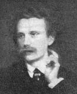 D. D. Home Perhaps the greatest ostensible physical medium who has ever lived was Daniel Dunglas Home. He was born in 1833 near Edinburgh, Scotland. However, at an early age he went to New England to live with his aunt who adopted him. At the age of seventeen he had a vision of the death of his mother, which was soon verified. After that time the household was frequently disturbed with loud raps and moving furniture. Declaring that he had introduced the devil to the household, his aunt threw him out. He began living with his friends and giving seances for them. Among those who were convinced of his abilities in this early period were Judge John Edmunds of the New York State Supreme Court and Robert Hare, an ameritus professor of chemistry at the University of Pennsylvania. Home never accepted any payments for his seances. He exhibited religious reverence for the powers and knowledge that manifested through him along with a scientific curiosity to seek rational explanations. He did, however, accept presents from his wealthy patrons. Napoleon III of France provided for his only sister. Czar Alexander of Russia sponsored his marriage. He conducted seances with the kings of Bavaria and Wurtemburg as well as William I of Germany and assorted nobility throughout Europe. Noted literati also consulted with him. To Lord Bulwer Lytton's satisfaction, Home called up the spirit that influenced him to write his famous occult novel, Zanoni. He conducted a seance for the poets Elizabeth Barrett Browning and her husband Robert. Although his wife protested, Robert Browning insisted that Home was a fraud and wrote a long poem called "Mr. Sludge, the Medium," describing an exposure that never took place. In fact, throughout his long career, Home was never caught in any verifiable deceptions -- although there were some apparant close calls. In 1868, Home conducted experiments with Cromwell Varley, chief engineer of the Atlantic Cable Company and afterwards before members of the London Dialectical Society, who held fifty seances with him at which thirty persons were present. Their report, published in 1871, attested to the observation of sounds and vibrations, the movements of heavy objects not touched by any person, and well-executed pieces of music coming from instruments not manipulated by any visible agency, as well as the appearance of hands and faces that did not belong to any tangible human being, but that nevertheless seemed alive and mobile. This report inspired Sir William Crookes to investigate Home for himself. Crookes conducted two very ingenious experiments with Home in which he tested alterations in the weight of objects and the playing of tunes upon musical instruments under conditions rendering human contact with the keys impossible. For the first experiment, Crookes developed a simple apparatus measuring the changes in weight of a mahogany board. One end of the board rested on a firm table, whilst the other end was supported by a spring balance hanging from a substantial tripod stand. The balance was fitted with a self-registering index, in such a manner that it would record the maximum weight indicated by the pointer. The apparatus was adjusted so that the mahogany board was horizontal, its foot resting flat on the support. In this position its weight was three pounds, as marked by the pointed of the balance.Crookes and eight other observers including Sir WIlliam Huggins, a physicist and member of the Royal Society, observed Home lightly place his fingertips on the end of the board and watched the register desccend as low as nine pounds. Crookes noted that, since Home's fingers did not cross the fulcrum, any tactile pressure he might have exerted would have been in opposition to the force that caused the other end of the board to move down. This experiment was conducted many times. On some occasions, Home never even touched the board: he merely placed his hands three inches over it. In other experiments, Crookes used a recording device to make a permanent record of the fluctuations in the weight. This was done to confute the argument that he himself was a victim of hallucinations. In order to test the stories about music
being played on the instrument, Crookes designed a cage in which to place
an accordion he purchased specifically for these experiments (see illustration).
The cage would just slip under a table, allowing Home to grasp the instrument
on the end opposite the keys, between the thumb and the middle finger.
Again many witnesses were present:
Mr. Home, still holding the accordion in the usual manner in the cage, his feet being held by those next to him, and his other hand resting on the table, we heard distinct and separate notes sounded in succession, and then a simple air was played. As such a result could only have been produced by the various keys of the instrument being acted upon in harmonious succession, this was considered by those present to be a crucial experiment. But the sequel was still more striking, for Mr. Home then removed his hand altogether from the accordion, taking it quite out of the cage, and placed it in the hand of the person next to him. The instrument then continued to play, no person touching it and no hand being near it.Crookes submitted his experimental papers to the Royal Society in order to encourage a large-scale investigation of the phenomena, which he felt were caused by a psychic force. However, the secretary of the society rejected his papers and refused to witness his experiments. Crookes also testified to having seen many other phenomena with Home, including levitation of Home's body, levitation of objects, handling of hot coals, luminous lights, and apparitions. Home himself bitterly resented any fraud
or deception. In his book, Lights and Shadows of Spiritualism,
written in 1878, he took an aggressive stance against phony mediums or
even those who were unwilling to cooperate with scientists. Unlike
most mediums, Home was always willing to be tested under well-lit and closely
supervised conditions.
Sir William Crookes' Researches 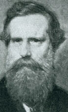 Sir William Crookes Despite the rejection of his psychical
research by the scientific establishment, Crookes asserted the validity
of his work throughout his life. In 1913, he was elected president of the
Royal Society, but unfortunately he had by then long since abandoned his
experimental work with mediums and found it wise not to discuss his work
often in public. The phenomena that Crookes reported have been beyond
the experience of almost all researchers before or since his time.
Often his experimental reports were inadequate by contemporary standards
since he simply assumed that his own word was sufficient to establish general
acceptance of a phenomenon. We cannot hastily conclude that Crookes
was deluded or duped, for he was at the height of his intellectual creativity
at the time he conducted this research. In the words of his friend,
Sir Oliver Lodge, "It is almost as difficult to resist the testimony as
it is to accept the things testified." His most amazing experiments
were conducted with a medium named Florence Cook.
Cook's ostensible ability to materialize the forms of various spirits had caused a stir among spiritualists. The most notable spirit to appear identified herself as Katie King, the daughter, in a former life, of the buccaneer Henry Morgan. The phenomena of spirit materialization had actually attracted public attention a few years earlier through a Mrs. Samuel Guppy, the protegee of Alfred Russell Wallace, a prominent spiritualist who was also noted as one of the discoverers with Charles Darwin of the theory of evolution. Mrs. Guppy introduced into her work the use of a tightly sealed cabinet in which she was placed in order to build up sufficient "power" for the construction of a spirit form which could then stand the scrutiny of the light outside the cabinet. The cabinet also provided, of course, an ideal opportunity for subterfuge on the part of the medium, which was undoubtedly taken advantage of on many occasions, for rarely were any medium and her spirit seen together at the same time. Crookes attended seances with Florence Cook for a period of over three years and studied her intensively for several months in a laboratory in his own home. He also made numerous observations of Katie King and took more than forty photographs of her. On several occasions he had the opportunity of seeing both Florence and her spirit, Miss King, at the same time and even of photographing them together. Katie appeared quite solidly before the guests at the seance, sometimes staying and conversing with them for a s long as two hours. Crookes even reports having embraced and kissed her. At other times she seems to have vanished instantaneously and soundlessly. It is difficult to believe that an accomplice could have continued such an intimate masquerade, in Crookes own home, for several months without detection. He gives several reasons why he feels Florence Cook could not have committed fraud: During the last six months, Miss Cook has been a frequent visitor at my house, remaining sometimes a week at a time. She brings nothing with her but a little handbag, not locked; during the day she is constantly in the presence of Mrs. Crookes, myself, or some other member of my family, and, not sleeping by herself, there is absolutely no opportunity for any preparation....I prepare and arrange my library myself as the dark cabinet, and usually, after Miss Cook has been dining and conversing with us, and scarcely out of our sight for a minute, she walks direct into the cabinet, and I, at her request, lock its second door, and keep possession of the key all through the seance.Crookes also indicates that Miss Cook was willing to submit to any test he wished to impose. Ironically enough, on two occasions, in 1872 and in 1880, individuals claimed to have exposed Florence Cook fraudulently masquerading as her spirit. It is not unreasonable to suggest any of several contradictory hypotheses: (1) that Crookes himself may have been deluded or enchanted by Florence Cook, (2) that while Crookes himself did observe genuine phenomena, Cook sometimes lost her abilities and resorted to fraud, (3) that the alleged exposures were not genuine, or (4) that Crooke's accounts were fraudulent. Psychical phenomena have always had an ironic and paradoxical nature, and Crookes' experimental methodology was certainly not sufficient to answer all of the questions one might like to ask. It is so difficult to maintain that a man
of Crookes' scientific caliber could have been taken in by cheap tricks,
some of his critics have assumed that he himself was in on the fraud.
They have claimed that Crookes had been involved in a romantic affair with
Florence Cook, and that he testified to her phenomena in order to shield
her reputation and hide his own emotional entanglement with her.
However, even if it were so, other matters would remain quite unresolved.
If Crookes was involved with Miss Cook, who was only fifteen years old
at the time, this hypothesis cannot account for the phenomena he reported
with both Home and Miss Fox. Nor does it begin to explain the research
on the same phenomena reported by a number of other eminent scientists.
Nevertheless, the accusation of experimenter fraud still continues to haunt
psychical researchers, and will continue to do so as long as people are
reinforced in their expectation of fraud by periodic publicly exposed episodes.
Marthe Beraud Another extraordinary physical medium whose ectoplasmic materializations were observed and photographed by many investigators was Marthe Beraud. Nobel laureate physiologist Charles Richet described the production of a phantom, called Bien Boa, under experimental conditions that he felt negated the possibility of theatrical props or accomplices: 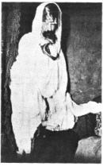 Ostensible Ectoplasmic Bien Boa Materialization He seemed so much alive that, as we could hear his breathing, I took a flask of baryta water to see if his breath would show carbon dioxide. The experiment succeeded. I did not lose sight of the flask from the moment I put it into the hands of Bien Boa who seemed to float in the air on the left of the curtain at a height greater than Marthe could have been even if standing up...
The most impressive evidence for ectoplasmic materializations comes from the molds of "spirit hands" made in paraffin. Richet reports his careful studies: 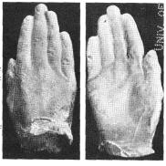 [Gustav] Geley and I took the precaution of introducing, unknown to any other person, a small quantity of chelesterin in the bath of melted paraffin wax placed before the medium during the seance. This substance is insoluble in paraffin without discolouring it, but on adding sulphuric acid it takes a deep violet-red tint; so that we could be absolutely certain that any moulds obtained should be by the paraffin provided by ourselves....The plaster casts from these molds – including a cast of intertwining hands are still available for inspection at the Metapsychic Institute in Paris. A physiologist of the first order, Richet sums up his research on ectoplasmic materializations: There is ample proof that experimental materialization (ectoplasmic) should take definite rank as a scientific fact. Assuredly we do not understand it. It is very absurd, if a truth can be absurd.
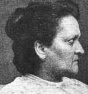 Eusapia Palladino One of the most extraordinary physical mediums in the history of psychical research was Eusapia Palladino, a rough peasant woman from Naples. She came to the attention of the learned world through seances held with the eminent Italian sociologist Cesare Lombroso. These seances continues to be held in Italy until 1894 when the French physiologist Charles Richet invited her to his private island to attend seances with Frederick Myers and Sir Oliver Lodge as well as J. Ochorowicz, a Polish researcher. It was Richet's belief he would be able to prevent Eusapia from using props or accomplices while she was on the island. The group witnessed most of the phenomena that had been previously reported: levitations, grasps, touches, lights, materializations, raps, curtains billowing, scents, and music. At all times the researchers were holding Eusapia's hands and feet. The following excerpts are from the published account of one of these sessions: Richet held both arms and one hand of E., while M. held both feet and her other arm. R. then felt a hand move her his head and rest on his mouth for some second, during which he spoke to us with his voice muffled. The round table now approached. R.'s head was stroked from behind....The round table continued to approach in violent jerks....A small cigar box fell on our table, and a sound was heard in the air as of something rattling....A covered wire of the electric battery came on to the table and wrapped itself around R.'s and E.'s heads, and was pulled till E. called out....The accordion which was on the round table got on the floor somehow, and began to play single notes. Bellier [Richet's secretary] counted 26 of them; and then ceased counting. While the accordion played, E.'s fingers made movements in the hands of both M. and L. in accord with the notes as if she was playing them with difficulty....Eusapia being well held, Myers heard a noise on the round table at his side, and turning to look saw a white object detach itself from the table and move slowly through the clear space between his own and Eusapia's head....Lodge now saw the object coming past Myer's head and settling on the table. It was the lamp-shade coming white side first....The "chalet" [music box] which was on the round table now began to play, and then visibly approached, being seen by both Myers and Lodge coming through the air, and settled on our table against Myers' chest....During the latter half of the sitting, Eusapia had taken one of Myers' fingers and drawn some scrawls with it outside Richet's flannel jacket, which was buttoned up to his neck. Myers said, "She is using me to write on you," and it was thought no more of. But after the seance, when undressing, Richet found on his white shirt front, underneath both flannel jacket and high white waistcoat, a clear blue scrawl: and he came at once to bedrooms to show it.Myers, Lodge and Richet were convinced of the genuineness of the phenomena that they reported and soon arranged for Eusapia to repeat her performance before SPR members in Cambridge. Again a number of phenomena were noted. Protuberances observed coming out of Eusapia's body and the billowing of curtains were particularly hard to explain away. However, at Hodgson's insistence the Cambridge group relaxed their controls over Eusapia's hands and feet to see if she would cheat if given an opportunity. Under these conditions, Eusapia conducted several seances producing nothing but fraudulent phenomena, whereupon Hodgson insistged that none of her other phenomena could be trusted. Other investigators acknowledged that she would cheat if given a chance, but that nevertheless, under controlled conditions she did produce authentic phenomena. The SPR maintained a firm policy of rebuffing the phenomena of any mediums who have ever been found guilty of systematic fraud. Members were urged to ignore any future reports of experiments with Eusapia. Reports concerning Eusapia, however, continued to flow in. In 1897, the noted French astronomer Camilla Flammarion reported on a series of seances in which "spirit" impressions were made in wet putty. Flammarion gives us a description of the event: 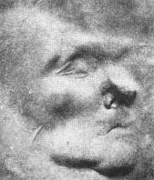 I sit at the right hand of Eusapia, who rests her head upon my left shoulder, and whose right hand I am holding. M. de Fontanay is at her left, and has taken great care not to let go of the other hand. The tray of putty, weighing nine pounds, has been placed upon a chair, twenty inches behind the curtain, consequently behind Eusapia. She cannot touch it without turning around, and we have her entirely in our own power, our feet on hers. Now the chair upon which was the tray of putty has drawn aside the hangings, or portieres, and moved forward to a point above the head of the medium, who remained seated and held down by us; moved itself also over our heads, – the chair to rest upon the head of my neighbor Mme. Blech, and the tray to rest softly in the hands of M. Blech, who is sitting at the end of the table. At this moment Eusapia rises, declaring that she sees upon the table another table and a bust, and cries out, "E Fatto" ("It is done"). It was not at this time, surely, that she would have been able to place her face upon the cake, for it was at the other end of the table. Nor was it before this, for it would have been necessary to take the chair in one hand and the cake with the other, and she did not stir from her place. The explanation, as can be seen, is very difficult indeed.Finally, in 1909, the SPR did publish a report of another series of seances with Eusapia conducted by a group of experimenters known for their exposure of other fraudulent mediums – the Hon. Everard Fielding, Hereward Carrington, and W. W. Baggally. They observed a number of levitations and materializations under good lighting conditions. These seances occurred in the middle room of a three-room hotel suite they had rented for the purpose in order to rule out the possibility of confederates. Their account is quite detailed and thorough, having been dictated minute by minute to a professional stenographer. They were favorably impressed with what they had observed. However, the following year Eusapia's abilities, whatever they were, seem to have faded and it was simply too late to conduct further research with her. Psychic Photography One interesting technique for measuring psychokinesis is thought-photography. Claims of spirit photographs, where extra faces appear on developed film, go back as far as the history of photography itself. Some have even claimed to photograph actual human thoughtforms. Photography of this sort almost inevitably provoked accusations of fraud that were difficult to disprove. In 1910, Dr. Tomokichi Fukurai, a professor of literature at the Imperial University of Tokyo, conducted a series of experiments in thoughtography. The publication of his findings aroused such hostility among Japanese scientists that he was forced to resign his position. He then continued his work at a Buddhist university associated with a temple of the esoteric Shingen sect of Buddhism on top of Mt. Koya. His works were translated into English in 1931 in a book titled Spirit and Mysterious World. Although it showed a carefully planned scientific investigation, even the psychical researchers of the time were not ready to deal with this type of data, embedded as it was in Buddhist philosophy. It was not until the late 1950s that a claim for psychic photography was taken seriously by researchers. The special gift for creating these photographs was discovered in Ted Serios, a Chicago Bellhop who had little formal education. The phenomena began when Serios allowed a friend to hypnotize him just to pass away the time. Serios claimed to be able to describe the locations of buried treasure. The friend then suggested that he concentrate on making photographs of the locations when he pointed a camera at a blank wall and triggered the shutter. They did not find buried treasure, but to their amazement, actual images appeared on the Polaroid prints of things that were not visible in the room. The phenomena came to the attention of
members of the Illinois Society for Psychic Research who eventually persuaded
a Denver psychiatrist, Dr. Jule Eisenbud, to observe one of Ted's demonstrations.
After a long string of failures, Serios managed to produce a striking success
for Eisenbud, who, although he had engaged in previous psychical exploration
with the context of psychoanalysis, was unprepared for phenomena of this
sort. After a sleepless night, he invited Serios to Denver for further
study. Eisenbud spend two years conducting well-controlled studies
with Serios. He was quite aware of the history of fraud and gullibility
in research of this sort and claims that he took every precaution to guard
against it. He book, The World of Ted Serios, published in
1966, contains the results obtained from his examinations.
The way in which Ted's mind ostensibly shaped the pictures was sometimes quite remarkable. In one session, in front of several witnesses, Ted first tried to reproduce images of the medieval town of Rothenburg. Then the experimenters asked him to try to reproduce an image of the old Opera House in Central City, Colorado. Serios agreed, and then asked the experimenters if they would like a composite of both images. The results are extraordinary. The photograph shows a striking resemblence to the livery stable across from the old Opera House. However, instead of the brick masonry, the image shows a kind of embedded rock characteristic of the buildings in the medieval town. 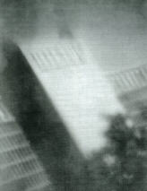 The large photograph shown is an enlargement of a Polaroid "thoughtograph" of the Denver Hilton Hotel. Eisenbud held the camera, which as pointed at Serios' forehead. Ted, at the time, was trying to produce an image of the Chicago Hilton ("I missed, damn it.") Eisenbud claimed that this image could only have been made with a lens different from that of the Polaroid 100, from an angle well up in the air, between the tree tops. This suggests that the thoughtographs are associated with out-of-body or traveling clairvoyant states. Eisenbud's book is noted for detailed observation, but even more remarkable is the penetrating study of this anomalous phenomena and the reaction to it of scientists and educators. To Eisenbud, the photographic manifestations seemed to follow a pattern pointing to the active operation of the animistic powers known to ancient people: As to building blocks for a theoretical structure that might bridge the gulf on other fronts between the mental and physical,...I can't think of a better place to begin than right where Ted is (and hopefully where others like him will be). For in a study of images and imagery of this sort – and in phenomenon like dreams, hallucinations, and apparitions, which prove not less remarkable and even more familiar than Ted's image – we are confronted by various organized entities with one leg in the world of reality and one leg in that extraordinary world we ordinarily term appearance.Adequate understanding of the Serios phenomena can only be obtained through detailed study of the experimental reports. During the following years, studies were also conducted by researchers at the Division of Parapsychology of the University of Virginia Medical School. These researchers failed to detect any signs of fraud in their cooperative subject, and they successfully obtained numerous striking photographs. While they were calling for further study of this puzzling phenomena, Serios' abilities began to fade and he has remained less active for the past thirty years. However, as of this writing, in November 2000, reports continue to come in of researchers who are obtaining some photographic evidence with Serios. Skeptics claim that Ted Serios was definitely exposed by Charlie Reynolds and David Eisendrath, both amateur magicians and professional photographers. They presented their account in a Popular Photography piece (October 1967) based on one weekend with Serios and the psychiatrist Jule Eisenbud, whose book, The World of Ted Serios, had sparked their ire. However, the November 1967 issue of Popular Photography published Eisenbud's response letter: I hereby state that if, before any competent jury of scientific investigators, photographers and conjurers, any chosen by them can in any normal way or combination of ways duplicate, under similar conditions, the range of phenomena produced by Ted, I shall (1) abjure all further work with Ted, (2) buy up and publicly burn all available copies of The World of Ted Serios, (3) take a full-page ad in Popular Photography in order to be represented photographically wearing a dunce cap, and (4) spend my spare time for the rest of my life selling door-to-door subscriptions to this amazing magazine. No time limit is stipulated.An article in Fate, August 1974, revealed that only one magician had responded to this delectable invitation. The Amazing James Randi couldn't resist the bait, but on learning of the conditions he backed out. According to Randi, one of the conditions was that he perform in a state of alcoholic intoxication, as Serios had typically done. As a non-drinker, Randi found this condition unacceptable. Nina Kulagina 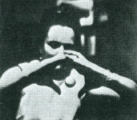 Nina Kulagina Meanwhile, in the former Soviet Union, researchers claimed to have discovered a woman, Nina Kulagina, who could exert a psychokinetic influence upon static objects. In 1968, Western researchers attending a conference in Moscow were shown a film of her in action. This film, which has since been seen many times in the United States, shows Kulagina apparently moving small objects, without touching them, across a table top. The Russians claimed that this woman, also known as Nelya Mikhailova, had been studied by some forty scientists, including two Nobel laureates. They also reported that, like Serios, Madame Kulagina was able to cause images to appear on photographic film. The communist scientists, who were by no means inclined to take a spiritualistic world view, felt that they had encountered a new force in nature. Very thorough studies of the electrical fields around her body as well as the electrical potentials in her brain were conducted by Dr. Genady Sergeyev, a well-known physiologist working in a Leningrad military laboratory. Exceptionally strong voltages and other unusual effects were observed: There is a large gradient between the electrical characteristics in the forward part of Mikhailova's brain versus the back part of the brain (fifty to one), whereas in the average person the gradient is four to one. The usual force field around Mikhailova's body is ten times weaker than the magnetic field of the earth.Detailed physiological studies of this sort with outstanding psychics are so rare they raise more questions than they answer. Kulagina has received a certain amount of adverse publicity. However, since 1968, several groups of western researchers have had opportunities to test her under differing circumstances. In most cases, their reports attest to the authenticity of her psychokinetic abilities. Her mediumship has led to a strain on her
health leading to a heart attack, and her doctors have suggested that she
limit this type of activity. The former Soviets, however, are reported
to have found others who have developed talents for psychokinesis, and
are also researching ways to train this ability in normal individuals.
The training begins with long hours practicing to move the needle of a
compass.
Uri Geller 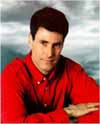 The most unusual psychokinetic effects currently being reported by scientists are associated with the Israeli psychic Uri Geller. Dr. Andrija Puharich, a physician known for his theoretical efforts to grasp the physics and physiology of psychic phenomena, as well as for his previously mentioned researches into psychic healing, in August of 1971, encountered Geller in Israel, where he arranged to conduct an extensive series of experiments with him. Eventually he brought Uri to the United States where his research continued and where he negotiated for further testing at the Stanford Research Institute in Menlo Park, California. It was at a symposium I organized in Berkeley, sponsored by KPFA-FM at the University of California, that Andrija Puharich made the first public presentation of experimental research with Uri Geller. 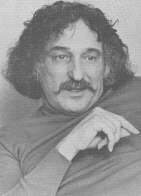 Andrija Puharich, MD Puharich carefully went over his investigations with Geller, indicating the conditions under which he had observed Geller bend and break metal objects, erase magnetic tape, make things disappear and reappear elsewhere, and cause the hands of a clock to change time. He also discussed how his sessions with Geller led him to believe that there was some other intelligent form of energy working through Geller, possibly from an extra-terrestrial or extra-dimensional source. The following week, the controversy over Geller deepened as Time magazine published a story claiming that Geller was a fake. Physicists Harold Puthoff and Russell Targ of Stanford Research Institute (now SRI International) also presented a paper about their research with Geller at a physics colloquium at Columbia University. The SRI scientists primarily emphasized the telepathic studies they had done with Geller. However, they did report on two significant psychokinetic experiments with Uri: A precision laboratory balance was placed under a Bell jar. The balance had a one-gram mass placed on its pan before it was covered. A chart recorder then continuously monitored the weight applied to the pan of the balance. On several occasions Uri caused the balance to respond as those a force were applied to the pan. The displacement represented forces from 1.0 to 1.5 grams. These effects were 10 to 100 times larger than could be produced by striking the Bell jar or the table or jumping on the floor. In tests following the experimental run, attempts were made to replicate Geller's results using magnets and static electricity. Controlled runs of day-long operation were obtained. In no case did the researchers obtain artifacts which resembled the signals Geller had produced.Subsequent to the presentation of the above report, the SRI researchers backed away from the Bell jar study claim, having been convinced that the result could have resulted from artifacts. The lesson of this incident is that time is indeed necessary to sift through and evaluate experimental claims in the area of psychokinesis. Simply because a claim is presented in a scientific format, one cannot assume that it will ultimately withstand the test of scrutiny. On several occasions, a group of nearly eighteen scientists, organized by me and Dr. Joel Friedman of the philosophy department at the University of California, Davis, met with Geller and observed a wide variety of unusual phenomena in his presence. However, none of them occurred under conditions of sufficient control for us to feel confident about publishing the results. One of our researchers, Saul-Paul Sirag (author of the material in the Appendix to this book), conducted an experiment with Geller in which Saul-Paul unexpectedly handed Geller a bean sprout and asked him to "make the movie run backwards." Uri closed his fist over the sprout and when he opened his hand some thirty seconds later there was no longer a sprout, but a whole solid mung bean. This effect, if verified by further replication, seems to indicate a psychokinetic influence involving time. Another study the Berkeley research group conducted was a follow-up survey of the reactions of individuals who had witnessed Geller's performances. Many people reported experiencing unusual visual or telepathic phenomena and several reported that, after watching Geller's demonstrations, they also were able to produce various psychokinetic effects. On occasions when I have broadcast radio interviews with Uri, dozens of listeners have reported psychokinetic phenomena in their own homes. Perhaps even more remarkable, thousands of individuals in England, France, Germany, Switzerland, Norway, Denmark, Holland and Japan have reported that they can also use PK to bend spoons after having only seen Geller on television. Ironically, the same social phenomena seems to occur when skeptics, masquerading as psychics make similar radio and television appearances. In a letter published in the April 10, 1975, issue of Nature, J. B. Hasted, D. J. Bohm, E. W. Bastin, and B. O'Regan report on the apparent partial dematerialization of a single crystal of vanadium carbide, encapsulated in plastic. The authors claimed that "there is no known way of producing this effect within the closed capsule and no possibility of substitution." The letter stressed the need for scientists to remain open-minded toward such extraordinary phenomena and to pay attention to psychological variables that can affect experiments. The crystal disappearance was not regarded as conclusive evidence as the authors did not actually observe or measure the change as it occurred. Nevertheless, they claimed to have "significant work in progress." At a conference on The Physics of Paranormal Phenomena held in Tarrytown, New York, it was estimated that psychokinetic metal-bending has ben witnessed in at least sixty different people. Metallurgic analyses have been made of several objects bent or fractured by Geller. In many instances, the results were not different from those of similar objects broken by the scientistsx as controls. In some instances, fatigue fractures were observed, even though the metal was new (i.e., key blanks) and was bent without the application of known physical stress. Perhaps the most interesting finding related
to a platinum ring that spontaneously developed a fissure in Geller's presence
– although he was not touching it. This ring was analyzed by physicist
Wilbur Franklin with a scanning electron microscope. He claimed that
adjacent areas of the ring indicated totally different conditions resembling
(1) fracture at a very low temperature, such as with liquid nitrogen, (2)
distortion as if by a mechanical shear, and (3) melting at a very high
temperature. Although the ring was fractured at room temperatures,
conditions (1) and (3) were observed at locations only one hundredth of
an inch apart. Franklin pointed out there was no known method to
duplicate such findings at room temperature – and that such findings were
extremely difficult to fabricate even by known laboratory techniques.
Poltergeist Cases An altogether different line of PK investigation has been poltergeist research. The word poltergeist is German and means a noisy and rattling spirit. Modern investigators, however, view the poltergeist as a spontaneous, unconscious, recurring psychokinetic phenomena centering around a person, usually an adolescent simmering with repressed feelings of anger. Unable to vent these feelings in a normal fashion, he manifests them through psychic means. 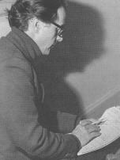 William G. Roll William G. Roll, of the Psychical Research Foundation (affiliated with West Georgia College in Carrollton, Georgia), is one of the foremost American researchers of poltergeist phenomena. One typical case occurred in a Miami warehouse full of glasses, ashtrays, plates and novelties. The disturbance, which involved more than two hundred incidences, took place in January 1967. Police officers, insurance agents, a magicians and others were unable to explain it. Roll describes his approach: 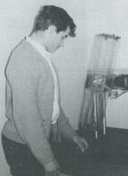 Julio with a Dice Tossing Machine It soon became clear that the incidents were concentrated around one employee, Julio, a nineteen-year-old shipping clerk. Certain areas of the large warehouse room where the disturbances took place were more frequently affected than others and these became the focus of the investigation. The investigators designed certain parts as target areas and placed objects in them hoping that the objects would be affected while Julio and the other employees were under observation.In several cases this is precisely what did happen. Julio was brought to the Psychical Research Foundation (then located in Durham, North Carolina) for further testing which revealed his strong feelings of hostility, especially towards parental figures, which he could not express openly and from which he felt personally detached. PK tests with a dice throwing machine produced suggestive results with Julio. In addition there was a poltergeist disturbance of a vase in a hallway in the laboratory while Julio was standing with the researchers several feet away. Within recent decades there have been about thirty well-documented poltergeist cases. Matthew Manning 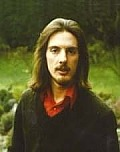 Matthew Manning Perhaps the most intriguing "poltergeist person" to be studied so far is Matthew Manning, who since 1966, at the age of eleven, has been the center of various psychokinetic outbreaks. Dr. A. R. G. Owen, former Cambridge mathematician and geneticist, who authored perhaps the most comprehensive book on poltergeists, claiming that Manning "is probably the most gifted psychic in the western world." In addition to typical psychokinetic outbreaks, Matthew has shown an apparent ability to communicate with spirits via automatic writing and drawing. Although his schoolmaster claims that he has never shown any particular drawing talent, he is able to reproduce – without any apparent effort or concentration – detailed and precise works of art in the style of deceased masters such as Durer, Picasso, Beardsley, and Matisse. Automatic writing has been produced in languages with which Manning was unfamiliar. Often verified information, and even psychic diagnoses, come through in this way. Thus the phenomena contain the kinds of evidence we might really associate with spirit phenomena. Particularly since the public demonstrations of Uri Geller, Manning has exhibited intentional psychokinetic effects amenable to scientific testing. When tested by Nobel laureate physicist Brian Josephson in Cavandish Laboratory at Cambridge University, Matthew demonstrated an unusual spinning effect over a compass needle. Ironically, when further instrumentation was used to record magnetic changes in the vicinity of the compass, the needle of the compass would only remain stationary. Nevertheless, the instruments did detect magnetic changes. Jusephson maintains that until further data is collected, his results will still have to be labeled "inconclusive." In other tests, conducted at the New Horizons Research Foundation in Toronto, Manning was able to demonstrate metal-bending, on demand, which was actually recorded on motion picture film. Several tests were conducted that recorded physiological measures such as muscle tension and brain waves during psychokinetic activity. No unusual muscular activity was noted. However, rather profound changes were seen in the electrical activity of the brain which have been described by Dr. Joel Whitton as a ramp function (actually a rather pictorial description of the chart printout). The ramp functions appeared similar to the EEG patterns in a patient suffering from an overdose of a hallucinatory drug and is suspected to stem from the older and deeper areas of the brain. These findings led the Toronto scientists to speculate on neurophysiological psi interrelationships. Dr. Whitton conducted a small-scale investigation with a number of known psychics to determine if they had any common childhood experiences. The answer was quite fascinating – for the one experience that all of the psychics had suffered in common was a severe electric shock before the age of ten. Although Matthew Manning did not recall such an incident, his mother informed the scientists that she had been so severely shocked three weeks before Matthew was born she was afraid she would lose him. This line of research seems to have implications
for psychical research. Perhaps the increasing number of children
who can now ostensibly demonstrate PK is associated with the greater number
of electronic gadgets in modern homes – with the correspondingly increased
probability of electric shocks. However, even if further inquiry
in this direction proves revealing, it will still fail to account for another
type of poltergeist case also documented by the Toronto group.
Philip the Ghost One most exciting PK case of the poltergeist variety actually did not involve a real ghost, or an individual, but an imaginary spirit named Philip. This unusual situation developed in Toronto as a group of members of the local Society for Psychical Research decided to meet regularly in an effort to conjure an apparition they created. They invented the character of Philip, an aristocratic Englishman who died of a tragic remorse during the seventeenth century. Every week for an entire year the group met for meditation, concentrating on Philip's story, in an attempt to manifest an apparition. There was no success, but in the summer of 1973 they learned about similar efforts made in England since 1964 by Batcheldor, Brookes-Smith, and Hunt. The British approach had been directed toward producing the physical phenomena of the old type seances of the Victorian era. Instead of quiet meditation, they created an atmosphere of jollity, together with singing songs, telling jokes, and exhortations to the table to obey the sitter's commands. Consequently, the Toronto group decided to take this approach. Extraordinary things began to happen: The table began to produce raps that became louder and more obvious as time went on. Using one rap for yes and two for no, the table was actually able to answer questions and recreate the personality of Philip. Occasionally, however, the answers were out of character for Philip. These raps occurred in a fair amount of
light, with all the participants' hands in view on the table. The
thickly carpeted floor generally prevented foot-tapping. At least
four members, of the original group of eight, were necessary to produce
this phenomenon. However, no single person was found to be essential.
Eventually the table began to move around the room at great speed with
no one touching it. On one occasion, the table completely flipped
over.
These phenomena continued for some time and have been duplicated by other groups who have learned how to unlock their own hidden PK abilities. All efforts at investigation have so far been unable to detect fraud and a two-hour film has even been made documenting these occurrences. This imaginary communicator, created by a group consciousness, seems to suggest that other alleged spirits, ghosts, entities, and perhaps even flying saucers also originate from within us. On several occasions the Philip group has been able to produce psychokinetic phenomena for live television audiences in Toronto. Indications were, in fact, that the large audience aided in the production of more dramatic phenomena. Reports state that there were two other groups within the Toronto Society for Psychical Research also able to produce spirit-like psychokinetic phenomena. One of these, the "Lillith group" has concocted a fictitious ghost story as the focus on their concentration. Like the Philip story, it has all the proper dramatic elements of romance and tragedy. Learning from he Philip group, the Lillith group was able to enter into the jovial atmosphere conducive to phenomena without spending time on meditations or visualizations. The phenomena they produced have been quite striking, including table levitations said to be more impressive than those caused by the original group. The Lillith group also attempted to produce voices on magnetic recording tape – with encouraging results. During the annual Christmas party of the Toronto SPR, a large group of individuals were able to spontaneously develop psychokinetic table-rapping. Somebody asked the "spirit" if it were Santa Claus and from then on the responses continued as if it were old Saint Nick himself rapping. Since then a third Toronto group has developed psychokinetic table rapping, this time ostensibly coming from a Charles Dickens character, the "Artful Dodger." Since the metal-bending demonstrations of Uri Geller and Matthew Manning in Toronto, the Philip group has also shown some success in this direction. In one instance, a metal medallion, which was particularly bent during the group session, continued to bend after the group departed until it completely crumpled. Perhaps the most significant development in the Philip story is the qualitative acoustic measurement of psychokinetic table rapping. Normal raps on the table used in the Philip session produced a sound that typically lasted for about half a second. On the other hand, many of the raps produced by Philip were shown to last only 0.16 sec. This was true in spite of the similarities in loudness and frequency of the raps. Further research along these lines may
provide a clearer notion of how the sounds are produced. Although,
it would seem likely that once a clear understanding of the phenomena is
gained the quality of the raps themselves will change.
Ted Owens – The "PK Man"
Earlier in the discussion of UFOs, I presented some material suggesting that Ted Owens, now deceased, had an ability to create various large-scale effects through telepathic communication with "space intelligences." Owens, himself, vacillated as to whether these effects were due to his own PK abilities or to the intervention of beings from another dimension. Owens learned about psychokinesis in the late 1940s, when, as a Duke University student (after having served in the Navy during the war) he was a clerical assistant in the Parapsychology Laboratory under the direction of J. B. and Louisa Rhine. He claimed that he discovered that it was just as easy, in terms of mental effort, to produce large-scale psychokinetic effects as it was to produce small-scale events such as with Rhine's dice experiments (which will be discussed in Section III). Before he died, he expressed his hope that this "discovery" would, one day, be termed the "Owens Effect." Here are some examples: Lightning Strikes A letter from he Ted Owens files dated August 12, 1967, addressed "To Whom It May Concern" and signed by Charles Jay of Morton, Pennsylvania, reads: Several weeks [ago] I took my friend, Kenneth Batch, over to Philadelphia to visit Ted Owens. It was a rainy day, and we had heard of Ted Owens' ability to make lightning strike...so we asked Ted Owens to give us a demonstration of his so-called power...by having...lightning strike in given areas we would designate. The three of us went out onto a balcony outside of Ted Owens' apartment...and my friend and I asked Ted Owens to have lightning strike at or near the top of the City Hall. In the ensuing period of time there were three massive strokes of lightning in that exact direction. And those were the only three bolts that struck in the entire sky...just where Ted Owens had pointed his hand.Recently, I interviewed Charles Jay who confirmed that the events transpired thirty years ago as described. His testimonial is not an isolated incident. I interviewed an attorney, Sidney Margulies, a partner in a Philadelphia law firm where Owens worked as a typist in 1967. Although my interviews were ten years (and then again thirty years) after the event, this lawyer vividly remembered the afternoon he challenged Owens to influence lightning. It was an overcast day in May of 1967. There was neither rain nor lightning. The law firm was located in an office tower overlooking the Camden bridge. The attorney, Margulies, challenged Owens to make lightning strike the bridge – on the spot. Owens pointed his hand at the bridge and seemed to concentrate. Within minutes a bolt of lightning struck the bridge. According to attorney Margulies, it was the only bolt of lightning at the time. His signed affidavit is in my files. Weather Control On February 12, 1974, Owens wrote a letter to Ed Busch, of radio station WFAA in Dallas, Texas. Owens, who had appeared on Busch's radio program the week before, made a claim: If you recall, on the program itself you requested that I make it snow instantly, and your colleague wanted heat. All right....[I] will cause freakish weather and, of course, heat. Normal summer heat coming up, should be amplified tremendously, perhaps to break a record. You will have great storms, lightning attacks, etc. But into this will be the intelligence not to cause death or injury to Texas people, but to show how I...can control the weather anyplace in the world. On February 16, 1974, newspaper clippings record that an earthquake centered in the Texas panhandle shook parts of Texas, Oklahoma and Kansas. The tremor registered between 4.0 and 4.5 on the Richter scale. On March 20, 1974, a storm developed over Texas and moved rapidly to the northeast. By the time it arrived in Georgia, winds reached up to a hundred miles per hour. A meteorologist with the National Weather Service said, "It's the strongest wind I've ever seen in the continental United States." Ed Busch wrote a statement testifying to these and other events, dated May 7, 1974. He stated: Owens sent me a letter, stating that he...would produce a "major demonstration" of weather control over Texas. Following Owens' letter Texas was struck by an earthquake, 4.5 on the Richter scale. Then Texas was struck by high winds and tornados. Then Texas had the coldest weather ever in its history. Then Texas was hit with hot winds that destroyed half the Texas wheat crop.Dozens of similar "demonstrations" appear in my records. One of them occurred in the San Francisco Bay area in early 1976 and was the cause of my learning about Owens' remarkable claims. On January 30, 1976, Owens sent the following letter to Harold Puthoff and Russell Targ at SRI International, a giant research organization located in Menlo Park, California, just south of San Francisco: Last night over TV the evening news showed a stricken California. No water. "The worst drought in 72 years." "Only three times in the entire history of the State of California...has such a drought appeared." Crops are dead and dying...and the animals are in pitiful condition.A UPI clipping from February 1, 1976, confirms Owens' statement about the drought: The cost of a California winter-drought has mounted to about $310.5 million....Ten more days of drought could precipitate an emergency in the livestock industry. But there is little moisture in sight.However, by February 6, 1976, the headlines changed: San Francisco Snowed by a Record Snowfall The biggest snowfall in exactly 89 years hit the city and surrounding areas...The storm also featured lightning and sleet. A giant television tower on Mt. San Bruno, south of San Francisco, was hit by lightning about 8:30 p.m. Wednesday knocking several TV stations off the air.The following news clip was sent to Owens by Puthoff and Targ, who had received Owens' prediction only one day earlier. From the Palo Alto Times, Thursday, February 5, 1976. Rare Snowfall Ends Drought on Peninsula The unexpected and unfamiliar weather was at odds with a forecast Wednesday that the dry spell would continue in the Bay Area....Not since the morning of January 21, 1962, have Mid-peninsulans awakened to find their homes blanketed with snow.The Oakland Tribune of February 5, 1976, stated that the storm brought with it: ...nearly every phenomenon in the weatherman's book throughout the Bay Area....Snow, hail, sleet, light rain, thunder and lightning hit the Bay Area after weeks of dry, balmy weather....Varying amounts of rain fell upon the lower two-thirds of the state....In northwestern California there are gale warnings.On February 10, a UPI story stated: The rainy season continued in California for the sixth consecutive day. Some mountainous regions of the state have received 6 to 8 inches of rain and coastal areas have measured 3 to 4 inches.UFO sightings, power blackouts and fireballs were also reported during this period. The Owens case is extremely complex, involving more than a hundred ostensible macro-PK events, synchronicities, UFO appearances, poltergeist-type phenomena, as well as apparitions and appearances of monster-like creatures. It was further complicated by Owens' own colorful personality which was far from saintly and far from conducive to thoughtful scholarly exploration. In addition, many of his seeming demonstrations involved deaths and accidents. If Owens' supposed powers were real, they were sometimes very dangerous. This situation alone led several researchers to reject any possibility of seriously studying or testing Owens' claims. My years of involvement with the Owens
case suggest to me that humanity is far from ready to confront the possibility
of large-scale PK phenomena of this sort. On the other hand, if such
abilities are possible, it is not wise to neglect their study.
References . Stephen E. Braude, The Limits of Influence: Psychokinesis and the Philosophy of Science. New York: Routledge and Kegan Paul, 1986, pp. ix-xii. . Carl G. Jung, Memories, Dreams and Reflections. London: Routledge and Kegan Paul, 1963, p. 152. . Charles Richet, op. cit., pp. 407-8. . Sir William Crookes, "Experimental Investigation of a New Force," Crookes and the Spirit World, op. cit., p. 24. . Ibid., p. 26. . D. D. Home, op. cit. . Sir William Crookes, "The Last of Katie King," in Crookes and the Spirit World, op. cit., p. 138. A poignant, yet comical, story. . Sir William Crookes, "Spirit Forms," in Crookes and the Spirit World, op. cit., pp. 135-6. . Harry Price, Fifty Years of Psychical Research. London: Longmans, Green and Company, 1939. . Charles Richet, op. cit., pp. 506-8. . Ibid., p. 543. . Ibid., pp. 543-4. . Soji Otani, "Past and Present Situation of Parapsychology in Japan," Parapsychology Today: A Geographic View, pp. 34-5. . J. Gaither Pratt, ESP Research Today. Metuchen, NJ: The Scarecrow Press, 1973, pp. 108-9. An insider's view of developments in psychic research. . Jule Eisenbud, The World of Ted Serios. New York: William Morrow, 1967, p. 332. . J. Gaither Pratt, op. cit., p. 114. . Sheila Ostrander and Lynn Schroeder, Psychic Discoveries Behind the Iron Curtain. New York: Prentice-Hall, 1969, p. 84. . Ibid., pp. 60-1. . Ibid., p. 407. . J. Gaither Pratt and H. H. J. Keil, "First-hand Observations of Nina S. Kulagina Suggestive of PK Upon Static Objects," Parapsychological Association Convention, Charlottesville, Virginia, 1973. . H. H. J. Keil and Jarl Fahler, "Nina S. Kulagina: A strong Case for PK Involving Directly Observable Movements of Objects Recorded on Cine Film," Parapsychological Association Convention, New York, 1974. . Montague Ullman, "Report on Nina Kulagina," Parapsychological Association Convention, 1973. . Benson Herbert, "Report on Nina Kulagina," Journal of Paraphysics, 1970, Nos. 1, 3, 5. . Lecture presented by Stanley Krippner at the University of California, Davis, 1973. . Andrija Puharich, Beyond Telepathy. New York: Doubleday, 1972. . Russell Targ and Harold Puthoff, "Experiments with Uri Geller," Parapsychological Association Convention, 1973. . H. H. J. Keil and Scott Hill, "Mini-Geller PK Cases," Parapsychological Association Convention, 1974. . Uri Geller, My Story. New York: Praeger, 1975. Geller's own account of his worldwide spoon-bending stir. . A. R. G. Owen, "Editorial," New Horizons, 2(1), April 1975, p. 1. . Wilbur Franklin, "Fracture Surface Physics Indicating Teleneural Interaction," New Horizons, 2(1), April 1975, p. 813. . W. G. Roll, "Poltergeists," in Richard Cavendish (ed.), Encyclopedia of the Unexplained. New York: McGraw-Hill, 1974, p. 200. . Ibid. . A. R. G. Owen, Can We Explain the Poltergeist? New York: Taplinger, 1964. . Matthew Manning, The Link. New York: Holt, Rinehart and Winston, 1975. . Matthew Manning: Study of A Psychic. This movie, made on location in England, shows how Matthew, an English schoolboy, developed ostensible powers of clairvoyance and psychokinesis and brought them under voluntary control. The film has been available from George Ritter Films Limited, Toronto, Ontario, Canada. . Peter Bander, "Introduction," The Link. New York: Holt, Rinehart & Winston, 1975. . Brian Josephson, "Possible Relations Between Psychic Fields and Conventional Physics," and "Possible Connections between Psychic Phenomena and Quantum Mechanics," New Horizons, 1(5), January 1975. . A. R. G. Owen, "A Preliminary Report on Matthew Manning's Physical Phenomena," New Horizons, 1(4), July 1974, 172-3. . Joel L. Whitton, "‘Ramp Functions' in EEG Power Spectra during Actual or Attempted Paranormal Events," New Horizons, July 1974, pp. 173-186. . Iris M. Owen and Margaret H. Sparrow, "Generation of Paranormal Physical Phenomena in Connection with an Imaginary Communicator," New Horizons, 1(3), January 1974, pp. 6-13. . K. J. Batcheldor, "Report on a Case of Table Levitation and Associated Phenomena," Journal of the Society for Psychical Research, 43(729), September 1966, pp. 339-356. . C. Brookes-Smith, "Data-tape Recorded Experimental PK Phenomena," Journal of the Society for Psychical Research, 47(756), June 1973, pp. 68-9. . Philip, The Imaginary Ghost. This film has been available for rent or purchase from George Ritter Films Limited in Toronto, Canada. . Iris M. Owen, "Philip's Story Continued," New Horizons, 2(1), April 1975. . Joel L. Whitten, "Qualitative Time-Domain Analysis of Acoustic Envelopes in Psychokinetic Table Rappings," New Horizons, April 1975. |